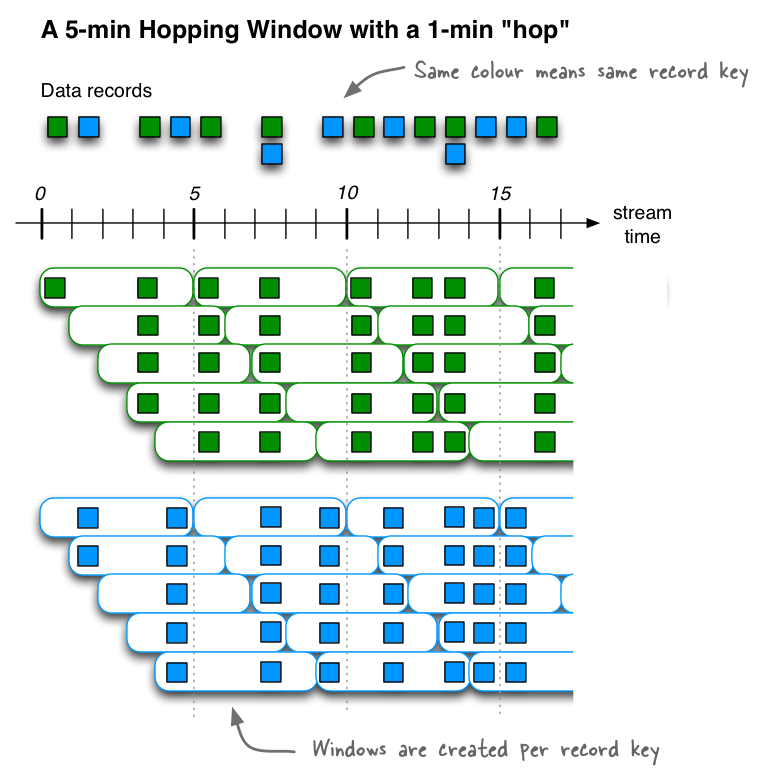
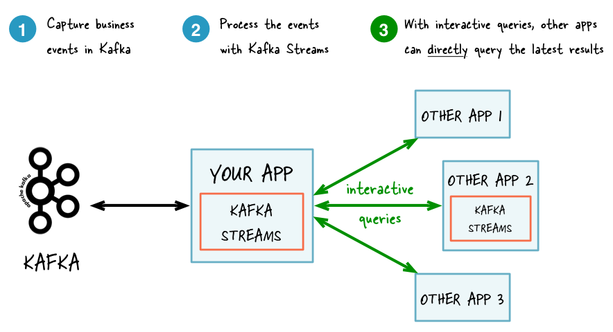

Kafka Stream
Introduction
Hi, my name is Hans.
Developer
Ordina Belgium
Agenda
- Concepts
- Demo
Concepts
Kafka

Concepts - ease of use
Simple client library
Only depends on kafka
Concepts: Guarantees
Fault tolerant local state
One record at a time
exactly once
Concepts: DSL
KStream
KTable
GlobalKTable
Concepts: Topology

Concepts: Windowing (Time)
Event Time
Processing Time
Ingestion Time
Concepts: Windowing (Time)
Tumbling time window
Hopping time window
Sliding time window (only for joining streams)
Session window
Windowing: Tumbling

Windowing: Hopping
Windowing: Session

Concepts: Local State
Demo
Questions ?
Thanks for watching!
Now kick some ass!